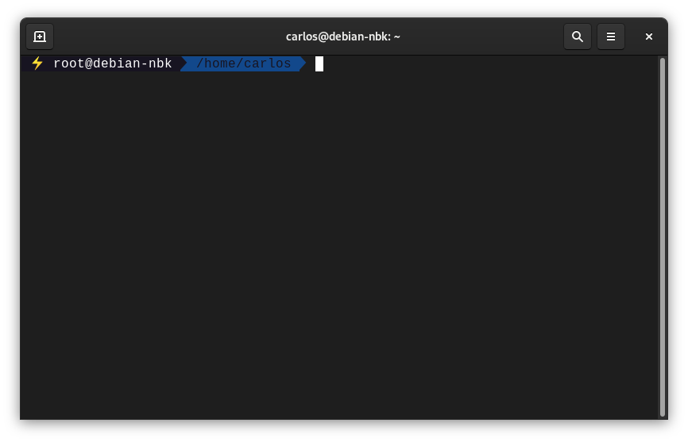
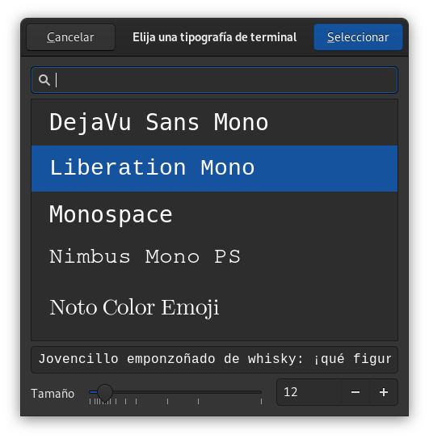

¿Cómo personalizar la terminal con oh my bash?
Pasos previos
Lo primero que debemos hacer es comprobar si es que tenemos instalado git y si tenemos instalado curl. Esto lo comprobaremos en nuestra terminal de la siguiente manera:
$ git --version
git version 2.30.2
$ curl --version
curl 7.74.0 (x86_64-pc-linux-gnu) libcurl/7.74.0 OpenSSL/1.1.1n zlib/1.2.11 brotli/1.0.9 libidn2/2.3.0 libpsl/0.21.0 (+libidn2/2.3.0) libssh2/1.9.0 nghttp2/1.43.0 librtmp/2.3
Release-Date: 2020-12-09
Protocols: dict file ftp ftps gopher http https imap imaps ldap ldaps mqtt pop3 pop3s rtmp rtsp scp sftp smb smbs smtp smtps telnet tftp
Features: alt-svc AsynchDNS brotli GSS-API HTTP2 HTTPS-proxy IDN IPv6 Kerberos Largefile libz NTLM NTLM_WB PSL SPNEGO SSL TLS-SRP UnixSockets
Si no tuviésemos instalado alguno de ellos debemos instalarlos con el siguiente comando:
Para instalar git:
$ apt-get install git
Para instalar curl:
$ apt-get install curl
Identificando nustro archivo .bashrc
Este archivo es el que contiene las configuraciones de nuestra terminal. Es por esa razón que es fundamental encontrarlo ya que próximamente haremos modificaciones sobre éste.
En general el archivo .bashrc lo encontraremos en \home\usuario si hacemos un $ ls -al nos debería aparecer este archivo .bashrc
Instalando oh my bash
Para instalar oh my bash debemos dirigirnos al siguiente enlace https://github.com/ohmybash/oh-my-bash en se encontraran dos formas de instalarlo. Para el caso de este tutorial optaremos por la vía de curl y para ello deberemos ejecutar la siguiente línea en la terminal:
bash -c "$(curl -fsSL https://raw.githubusercontent.com/ohmybash/oh-my-bash/master/tools/install.sh)"
Una vez instalado ya deberían producirse cambios en nuestra terminal.
Instalando tema agnoster
Uno de mis temas favoritos es el de agnoster el cual tiene una configuración adicional para que este tema funcione. para ellos nos vamos al repositorio y encontraremos las siguientes instrucciones:
$ git clone https://github.com/powerline/fonts.git fonts
$ cd fonts
$ ./install.sh
Configurando .bashrc
Una vez hayamos instalado oh my bash y hagamos instalado el tema de agnoster para que surjan los cambios debemos modificar nuestro archivo .bashrc y editar la línea y dejarla de la siguiente forma OSH_THME = "agnoster". Se guardan los cambios y en la terminal escribimos lo siguiente:
source .bashrc
y se nos debería ver de la siguiente manera: 
nota: Si por alguna razón no se te ve de igual manera es probable que debas ajustar la fuente de tu terminal. En mi caso para que se pueda ver así utilice Liberation mono como se ve en la imagen. 
Fuentes
Toda la información que puedes ver acá esta contenida en el siguiente video:
Palabras finales
A mi parecer instalar oh my bash ha aumentado mi productividad ya que puedo obtener bastante información desde la terminal. Puedo ver con claridad en que rama estoy trabajando si es que estoy en un entorno virtual además de la ruta. Además de que se ve genial! Espero que te haya sido útil este tutorial y no te olvides de enviarme un tuit diciendo Hey Carlos! estoy en tu github pages! Eso me haría muy feliz.
como mierda hago los cambios
no tengo pico idea de como se acen los cambios